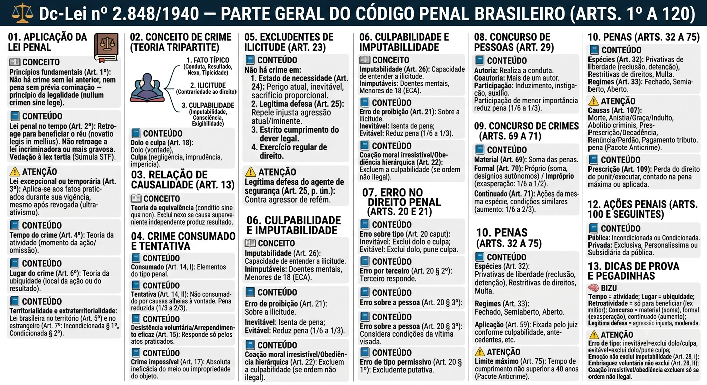

Material de estudo: Dc-Lei nº 2.848/1940 — Parte Geral do Código Penal (Arts. 1º a 120)
Material complementar · Ver fonte no GitHub
Aplicação da Lei Penal
Princípios fundamentais (Art. 1º)
Não há crime sem lei anterior que o defina, nem pena sem prévia cominação legal — princípio da legalidade (nullum crimen, nulla poena sine lege).
Lei penal no tempo (Art. 2º)
A lei penal só retroage para beneficiar o réu (novatio legis in mellius). A lei nova que cria crime (novatio legis incriminadora) não retroage; a lei mais gravosa (novatio legis in pejus) também não retroage. Vedação à 'lex tertia' (Súmula do STF): não se pode combinar partes benéficas de leis diferentes.
Lei excepcional ou temporária (Art. 3º)
Mesmo depois de revogada, continua a aplicar-se aos fatos praticados durante sua vigência (ultra-ativismo).
Tempo do crime (Art. 4º)
Adota-se a teoria da atividade: considera-se praticado o crime no momento da ação ou omissão, ainda que outro seja o momento do resultado.
Lugar do crime (Art. 6º)
Teoria da ubiquidade: considera-se praticado o crime no lugar onde ocorreu a ação/omissão (conduta) ou onde se produziu o resultado (em qualquer dos dois).
Territorialidade e extraterritorialidade
A lei brasileira aplica-se a crimes cometidos no território nacional (Art. 5º), com exceções convencionadas. Aplica-se também a crimes cometidos no estrangeiro (Art. 7º):
- Incondicionada (§ 1º): crimes contra a vida do Presidente da República, contra a administração pública brasileira, etc.;
- Condicionada (§ 2º): depende de condições (ex.: ingresso no Brasil, punibilidade no país do fato).
Conceito de Crime (Teoria Tripartite)
Fato típico, ilícito e culpável
O crime é composto por três elementos:
1. Fato típico: conduta (dolosa ou culposa), resultado, nexo causal e tipicidade;
2. Ilicitude (antijuridicidade): contrariedade ao ordenamento jurídico;
3. Culpabilidade: imputabilidade, potencial consciência da ilicitude e exigibilidade de conduta diversa.
Dolo e culpa (Art. 18)
Dolo: vontade livre e consciente de realizar a conduta típica (dolo direto ou eventual).
Culpa: conduta por negligência, imprudência ou imperícia. Só é punível se houver previsão legal expressa.
Relação de Causalidade (Art. 13)
Teoria da equivalência dos antecedentes
Causa é a ação ou omissão sem a qual o resultado não teria ocorrido (conditio sine qua non). Exclui-se o nexo quando sobrevém causa superveniente relativamente independente que por si só produziu o resultado.
Crime Consumado e Tentativa
Consumado (Art. 14, I)
Quando nele se reúnem todos os elementos da definição legal do tipo penal.
Tentativa (Art. 14, II)
Iniciada a execução, o crime não se consuma por circunstâncias alheias à vontade do agente. Pena reduzida de 1/3 a 2/3.
Desistência voluntária e arrependimento eficaz (Art. 15)
O agente que desiste de prosseguir (desistência voluntária) ou impede o resultado (arrependimento eficaz) responde apenas pelos atos já praticados.
Crime impossível (Art. 17)
Quando, por absoluta ineficácia do meio ou impropriedade do objeto, é impossível consumar o crime, não há crime (tentativa inidônea).
Excludentes de Ilicitude (Art. 23)
Causas de exclusão da ilicitude
Não há crime quando o fato é praticado em:
1. Estado de necessidade (Art. 24): perigo atual, inevitável, não provocado voluntariamente, sacrificando bem de valor igual ou inferior;
2. Legítima defesa (Art. 25): repele, com moderação, injusta agressão atual ou iminente, a direito seu ou de outrem;
3. Estrito cumprimento do dever legal;
4. Exercício regular de direito.
Legítima defesa do agente de segurança pública
Art. 25, parágrafo único (incluído pelo Pacote Anticrime): considera-se também em legítima defesa o agente de segurança pública que repele agressão ou risco de agressão a vítima mantida refém durante a prática de crimes. Não exclui o dever de moderação e necessidade.
Culpabilidade e Imputabilidade
Imputabilidade (Art. 26)
É a capacidade de entender o caráter ilícito do fato e de determinar-se de acordo com esse entendimento. São inimputáveis:
- Doentes mentais (desenvolvimento mental incompleto ou retardado);
- Menores de 18 anos (sujeitos ao ECA).
Erro de proibição (Art. 21)
Erro sobre a ilicitude do fato. Se inevitável, isenta de pena; se evitável, reduz a pena de 1/6 a 1/3.
Coação moral irresistível e obediência hierárquica (Art. 22)
Excluem a culpabilidade, desde que a ordem não seja manifestamente ilegal.
Erro no Direito Penal (Arts. 20 e 21)
Erro sobre elementos do tipo (Art. 20, caput)
O agente erra sobre um dado elementar do tipo penal (ex.: leva mala de outrem achando que é sua).
- Inevitável (invencível): exclui dolo e culpa (atípico);
- Evitável (vencível): exclui o dolo, mas permite punição por culpa, se prevista.
Erro determinado por terceiro (Art. 20, § 2º)
Quem responde é o terceiro que causou o erro.
Erro sobre a pessoa (Art. 20, § 3º)
Quando o agente quer atingir 'A' mas, por erro, atinge 'B', consideram-se as condições da vítima pretendida ('A').
Erro de tipo permissivo (excludente putativa - Art. 20, § 1º)
O agente supõe erroneamente estar em legítima defesa (ex.: vê um objeto e acredita ser uma arma, mas é um celular).
Concurso de Pessoas (Art. 29)
Autoria, coautoria e participação
Quem de qualquer modo concorre para o crime incide nas penas a este cominadas.
- Autoria: quem realiza a conduta típica;
- Coautoria: mais de um autor;
- Participação: induzimento, instigação ou auxílio.
A participação de menor importância pode reduzir a pena de 1/6 a 1/3.
Concurso de Crimes (Arts. 69 a 71)
Concurso material (Art. 69)
O agente pratica duas ou mais ações, resultando em dois ou mais crimes. As penas são somadas (cumulação material).
Concurso formal (Art. 70)
Com uma só ação ou omissão, pratica dois ou mais crimes.
- Próprio: desígnios autônomos (aplica-se a soma, como no material);
- Impróprio: sem desígnios autônomos (aplica-se a exasperação: pena de um dos crimes aumentada de 1/6 a 1/2).
Crime continuado (Art. 71)
Várias ações da mesma espécie, nas mesmas condições de tempo, lugar e maneira de execução, as subsequentes são havidas como continuação da primeira. Aplica-se a pena de um só crime, aumentada de 1/6 a 2/3.
Penas (Arts. 32 a 75)
Espécies de penas (Art. 32)
1. Privativas de liberdade (reclusão e detenção);
2. Restritivas de direitos (prestação de serviços, interdição, etc.);
3. Multa.
Regimes de cumprimento (Art. 33)
Fechado: execução em estabelecimento de segurança máxima ou média;
Semiaberto: colônia agrícola, industrial ou similar;
Aberto: casa do albergado ou regime de liberdade vigiada.
Aplicação da pena (Art. 59)
O juiz fixa a pena conforme a culpabilidade, antecedentes, conduta social, personalidade, motivos, circunstâncias e consequências do crime.
Limite máximo de cumprimento (Art. 75)
O tempo de cumprimento das penas privativas de liberdade não pode ser superior a 40 anos (Pacote Anticrime, Lei 13.964/2019).
Extinção da Punibilidade (Arts. 107 a 120)
Causas de extinção (Art. 107)
Principais hipóteses:
- Morte do agente;
- Anistia, graça e indulto;
- Abolitio criminis;
- Prescrição, decadência e perempção;
- Renúncia ou perdão;
- Pagamento do tributo (em crimes fiscais).
Prescrição (Art. 109)
O Estado perde o direito de punir ou executar a pena após determinado tempo, contado com base na pena máxima cominada ou na pena aplicada.
Ações Penais (Arts. 100 e seguintes)
Tipos de ação penal
Pública: incondicionada (não depende de representação) ou condicionada (depende de representação da vítima).
Privada: exclusiva, personalíssima ou subsidiária da pública (quando o MP é inerte).
Dicas de Prova e Pegadinhas
Gatilhos mentais
📌 Tempo do crime = teoria da atividade (momento da ação/omissão).
📌 Lugar do crime = teoria da ubiquidade (qualquer local onde ocorreu a ação ou o resultado).
📌 Retroatividade = só para beneficiar (lex mitior).
📌 Concurso de crimes = material (soma), formal (exasperação) e continuado (aumento de 1/6 a 2/3).
📌 Legítima defesa = agressão injusta, atual ou iminente, reação moderada.
Pegadinhas do CEBRASPE
⚠️ Erro de tipo inevitável = exclui dolo e culpa.
⚠️ Erro de tipo evitável = exclui dolo, pune por culpa se previsto.
⚠️ Emoção/paixão não excluem imputabilidade (Art. 28, I).
⚠️ Embriaguez voluntária não exclui (Art. 28, II).
⚠️ Coação irresistível e obediência hierárquica excluem culpabilidade apenas se a ordem não for manifestamente ilegal.
Mapa-mental
